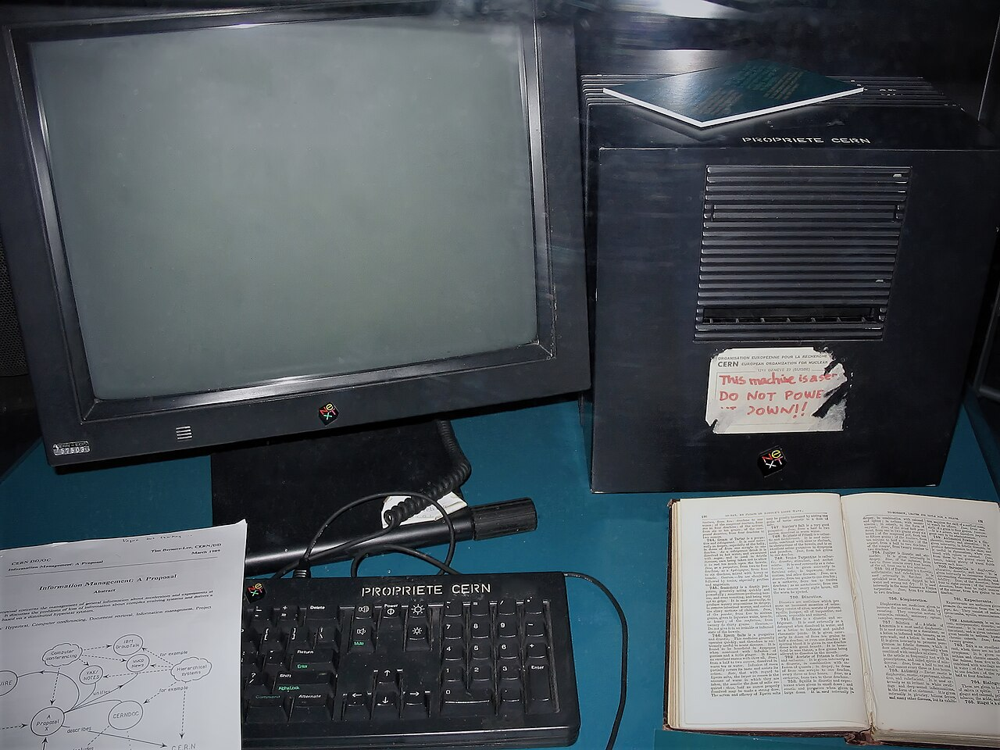

What happens when you press Enter?
You type an address, press Enter, and a page appears in about a second. In that second your browser asked a stranger for directions, opened a locked line to a computer that may be on another continent, asked for one file, then went back for a dozen more. This lesson slows that second down so you can watch every step.
You do not need this to write your first page. You do need it the first time your published site shows a blank screen, a padlock warning, or a 404, because each of those is one step in this trip going wrong.
By the end you can
- Name every part of a URL and say which computer reads each part.
- Explain what DNS does and why a typo in a domain gives a different error from a typo in a filename.
- Read an HTTP request and response, including the status code.
- Explain what the padlock in HTTPS does and does not promise.
- Find every request your own site makes, using the Network tab.
Fits before Lesson 1 as a big picture, or before Lesson 9 when your site goes live.
The big picture: clients, servers and an address book
The web is a conversation between two kinds of computer. Your browser is the client: it asks. A web server is a computer that waits for requests and answers them by sending files. Nothing on the web arrives unless a client asked for it first.
Computers on the internet find each other by number, an IP address such as 185.199.108.153. People are bad at remembering numbers, so we use names like github.io instead. The Domain Name System is the internet's address book: it turns a name into a number. The internet is the roads; the web is one kind of traffic on those roads, alongside email, games, and video calls.
Pause: name one physical thing the internet is made of, and one rule (protocol) computers must agree on to use it.
Lab 1 — Take an address apart
A URL packs several instructions into one line. Different computers read different parts: DNS reads only the domain, the server reads the path and query, and the fragment never leaves your browser at all.
Try: delete the s from https, remove the path, then type an address with a space in it. What does each part's "who reads it" line say now?
Lab 2 — One request, step by step
Here is the whole trip for one page. Step through it, then flip one of the switches and run it again. Each switch is a real fault students hit when they publish.
Reading the server's reply
Every HTTP response starts with a three-digit status code. The first digit tells you who has the problem: 2 means it worked, 3 means "look somewhere else", 4 means the request was wrong, 5 means the server broke.
| Code | Meaning | When you will see it |
|---|---|---|
200 OK | Here is the file you asked for. | Every working page, image and stylesheet. |
301 Moved Permanently | That file lives at a new address now; go there. | Typing http:// on a site that forces https://. |
304 Not Modified | You already have the newest copy; use it. | Reloading a page whose files have not changed. |
404 Not Found | The server is there, but nothing lives at that path. | A misspelled filename, or Photo.JPG versus photo.jpg. |
500 Internal Server Error | The server crashed while answering. | Rare on GitHub Pages, which only hands out files and runs none of your code. |
A 404 and a "site can't be reached" error are different steps failing. 404 means DNS worked, the connection worked, and the server answered: only the path was wrong. "Can't be reached" means the trip never got that far, usually because the domain name is wrong.
The padlock: what HTTPS promises
HTTPS is HTTP sent through an encrypted tunnel. Before any page is sent, your browser and the server agree on a secret key, and the server proves who it is with a certificate signed by an organisation your browser already trusts.
The padlock does mean
- Nobody on the Wi-Fi or along the route can read what you send or receive.
- Nobody along the way can change the page before it reaches you.
- You are connected to the domain shown in the address bar.
The padlock does not mean
- The site is honest. A scam site can have a padlock too.
- The domain is the one you meant.
paypa1.comcan have a valid certificate. - Your information is safe once it arrives. That depends on the people running the server.
GitHub Pages gives every site HTTPS for free. Leave "Enforce HTTPS" switched on in your repository's Pages settings.
Packets: how a file actually travels
A web page does not travel in one piece. It is cut into packets of about 1,500 bytes, each labelled with where it is going and its place in the sequence. Routers pass each packet one hop closer to its destination, and different packets may take different routes. Your computer puts them back in order and asks again for any that went missing.
Arrived (in the order they came)
Rebuilt by sequence number



Try it on your own site: the Network tab
Your browser records every request it makes. Open the developer tools (F12, or right-click → Inspect) and choose the Network tab, then reload the page.
- Find the first row. It is your HTML file. Its status should be 200.
- Count the rest. Each stylesheet, script, image and font is its own request, discovered only after the HTML arrived.
- Look for red rows. Red usually means 404: the file your HTML names does not exist at that path.
- Reload again. Notice files marked as coming from the cache, or 304. They were not downloaded again.
- Read one request. Click a row and find the request method, the status code, and the response headers you saw in Lab 2.
Check: you can say how many requests your page makes and which one is the largest. Repair: fix any red row by matching the filename in your HTML to the real file, letter for letter.
Check your understanding
1. You type mayacodes.github.io but the real site is maya-codes.github.io. Which step fails?
2. Which part of https://site.org/about.html#team is never sent to the server?
3. A page loads as plain black text with no colours. The HTML returned 200. What is the most likely cause?
4. A site has a padlock. What can you be sure of?